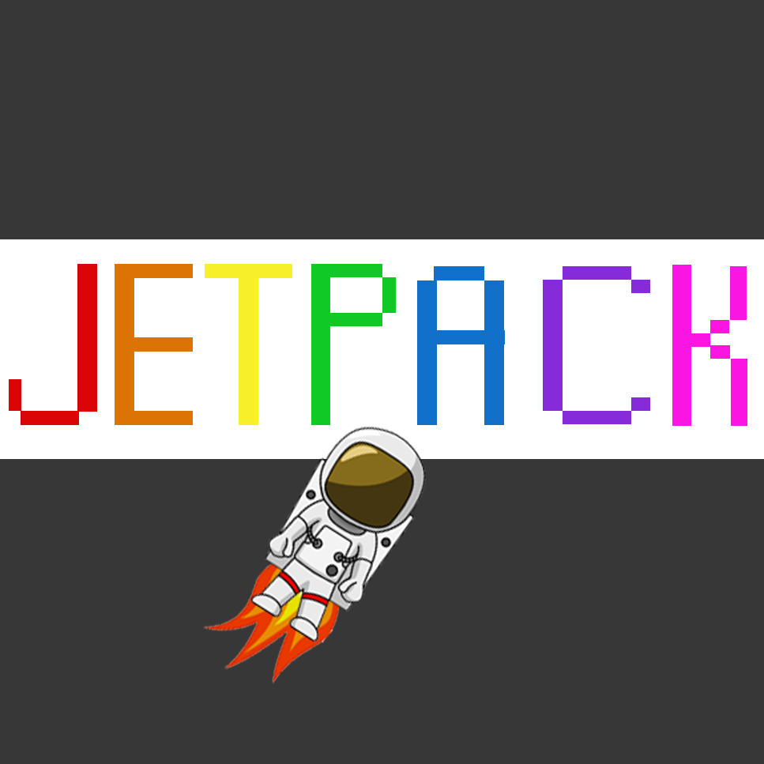
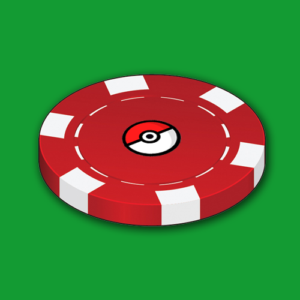
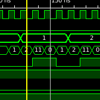
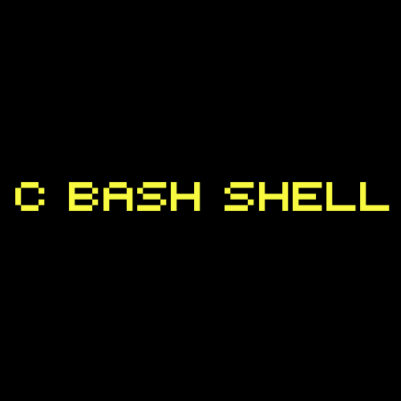

K. Rodman Mannix
About
Events
Projects
Experience
Hobbies
Styles
Bootstrap
Foundation
Custom




![In this paper, the research team presents a feasibility study that leverages the Internet of Things (IoT) technology to make store items “smart” so that they can automatically register and update their location information in an information retrieval system, allowing shoppers to search, locate, and map them on the store floor plan using mobile devices. A free-accessible Android-based mobile app SmartMart has been developed to demonstrate the promise of this preliminary work. Continuous development of this research could lead to a complete change in our day-to-day shopping experience.](img/projects/smartmart.png "SmartMart")
![Developed as a Java Swing applet, SwingWord is a tool for elementary school teachers to aid in instructing young students phonetic sounds. The applet includes a library of over 70,000 words each broken down by phonetic sound in a variety of codes - teachers can select a single or pattern of phonetic sounds in a query, which will return all words in the library that exhibit these phonetic segments. The goal of this project is to provide a variety of words teachers can use as examples of phonetic sounds, giving students a broader range of possible words to learn English from.](img/projects/swingword.png "SwingWord")
![Red, Write & Blue is a mobile application currently designed for Android that enables everyday users to send motivational messages to troops overseas. Users will write messages that go through a series of anonymous peer reviews to ensure that the content is both appropriate and written with good intent. Users will be rewarded with coupons and deals through sponsers of the app. The application is finished, but the process of enabling the messages to be sent to troops & gaining sponsers is still in development.](img/projects/rwb.png "Red, Write & Blue")